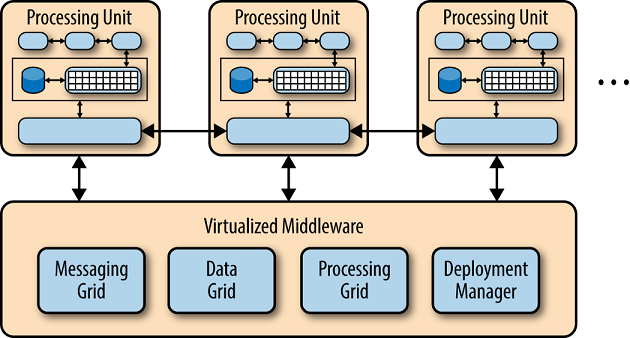

当我们进入软件工程的世界，有一天需要学习软件架构模式的基本知识。当我刚开始编码的时候，我不知道从哪里获得资源来简单介绍现有的架构模式，不是那种太详细和混乱的，而是非常抽象和简单的理解。
这一直是个问题，直到我发现了Mark Richards的《软件架构模式》一书。强烈建议仔细阅读这本书。
为什么作为软件工程师至少要学习基本的架构模式？
我相信有很多文章可以回答这个问题，但我将给你几个理由来考虑。首先，如果你知道架构模式的基本知识，那么你就会更容易遵循架构师的要求。其次，了解这些模式将有助于你在代码中做出决定：例如，如果你的应用设计是基于事件驱动的微服务，作为一名软件工程师，如果你注意到现有服务中逻辑的复杂性和责任的增加，你必须把你的代码解耦到一个独立的服务中。(如果你没有得到这部分内容，就跟着文中的内容走，文中对这种模式进行了简单的解释）。
这本书中Mark Richards描述了5种模式：
- 分层架构
- 事件驱动的架构
- 微内核架构（或插件架构）
- 微服务架构
- 基于空间的架构（或云架构模式）
1. 分层架构
它是单体应用最常见的架构。该模式的基本思想是将应用程序的逻辑划分为若干层，每层都封装了特定的角色。例如，持久层将负责你的应用程序与数据库引擎的通信。
2. 事件驱动的架构
这种模式背后的想法是将应用逻辑解耦为单一用途的事件处理组件，这些组件异步地接收和处理事件。这种模式是流行的分布式异步架构模式之一，以高可扩展性和适应性而闻名。
3. 微内核结构
Mikrokernel架构，也被称为插件架构，是有两个主要组成部分的设计模式：一个核心系统和插件模块（或扩展）。一个很好的例子是网络浏览器（核心系统），在那里你可以安装无尽的扩展（或插件）。
4. 微服务架构
微服务架构由单独部署的服务组成，每个服务都有理想的单一责任。这些服务是相互独立的，如果一个服务出现故障，其他服务不会停止运行。
5. 基于空间的架构

基于空间的模式背后的主要想法是分布式共享内存，以缓解经常发生在数据库层面的问题。其假设是，通过使用内存数据处理大部分操作，我们可以避免在数据库中进行额外的操作，从而避免将来可能出现的任何问题（例如，如果你的用户活动数据实体发生了变化，你不需要改变一堆代码来持久化和从数据库中检索该数据）。
基本方法是将应用程序分成处理单元（可以根据需求自动扩大和缩小），数据将在这些单元之间进行复制和处理，而不需要在中央数据库中进行任何持久化处理（尽管在系统故障的情况下会有本地存储）。
下面是一些架构模式的最简单例子:
参考：